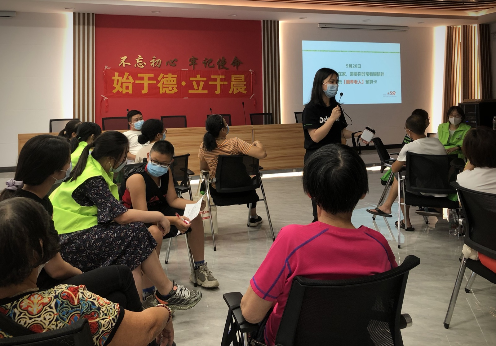

🏠 社区关爱活动
活动走进各街道、社区与校园，聚焦孤寡老人、困境儿童、困难家庭等弱势群体，以沉浸式公益实践为载体，面向全社会各行各业志愿者开放参与。

这是我最早落地的一场社区公益实践活动。本次活动招募30余名社会志愿者，对接10户困难家庭，为每户家庭送上适配日常所需的生活物资，切实缓解基层困难家庭的生活压力。我在活动设计中特别鼓励志愿者携带3岁以上孩子共同参与，让孩童、青少年、成年人共同走入公益场景，形成跨年龄的善意传递氛围。
从发展心理学角度来看，低龄孩子的善意观、价值观无法依靠空洞说教建立，必须依托真实体验慢慢扎根。生活中，大人常常习惯性叮嘱孩子"要善良、要助人"，但抽象的道理距离孩子的世界太过遥远。我在本次活动中，刻意把高高在上的"行善大义"，翻译成孩子可以看懂、可以做到的日常小事：走访陪伴、礼貌问候、力所能及的帮忙，让孩子真切明白，善意不需要伟大，只需要愿意行动。
这场活动带给所有参与者全新的体验与触动。对孩子而言，他们第一次跳出自我的生活圈，看见不同家庭的生活状态，自然而然生出珍惜、感恩与同理心；对成年志愿者来说，忙碌的日常容易让人陷入生活固化，而这场接地气的基层帮扶，让大家跳出固有视角，重新审视自己的生活与拥有。
活动最终获得江南中街道官方认可，获评"义心同行伙伴"荣誉称号，也让所有参与者收获了朴素又真实的成长与治愈。
经过两年沉淀，本次志愿者规模直接翻倍，参与者覆盖更多行业、更多年龄段的社会群体，公益辐射面进一步扩大。相较于首场活动侧重物资帮扶与善意体验，我将本次活动的核心重点升级为参与者的自我反思与双向成长，让公益的价值不止惠及受助家庭，更滋养每一位参与的志愿者。
不同年龄段的参与者，在公益场景中的收获维度完全不同。青少年有了独立思考的能力，不再满足于简单的"做事帮忙"，更需要通过交流、复盘、表达完成自我成长；成年志愿者长期固定在工作与生活的单一节奏中，很容易形成思维固化，需要通过集体公益交流，获得新的生活启发。
因此我在活动收尾，专门增设全员分享交流会，不设年龄门槛、不设身份区别，让每个人都能自由表达真实感受。
很多青少年志愿者在分享中坦言，这次活动让自己跳出了学业的单一维度，真切看见生活的多样性，学会换位思考、懂得体谅他人；不少职场志愿者分享，忙碌的工作让人渐渐忽略生活本身，而这场公益与交流，让自己紧绷的心态得到松弛，也学会了更包容地看待生活与他人。
我始终相信，公益最珍贵的价值，从来不只是"帮助了谁"，而是让每一个参与的人，都能被温柔治愈、被真实启发，学会理解他人、接纳生活。很多参与者反馈，这场活动让自己第一次在陌生人的真诚分享里，获得了深刻的自我成长。

本次活动志愿者规模突破60人，青少年、孩童参与者占比大幅提升，同时吸纳了更多青年学生、职场新人、全职从业者等多元群体参与，公益队伍的年龄结构、职业结构更加丰富。
结合儿童与青少年的心理成长特点，孩子的善意与付出，需要被及时看见、被正向肯定，才能慢慢内化为稳定的品格与自信。为此我专门优化了活动激励体系，手工定制「最可爱志愿者」「小小志愿者」等专属荣誉小奖状，给到每一位参与的孩童与青少年志愿者。
不同于制式证书，手工奖状更有温度，也更能贴合孩子的心理需求，让他们的每一份真诚付出都能得到专属认可。
从参与者的真实反馈来看，这套轻量化、有温度的激励方式效果极佳。孩子们在被肯定的过程中，真切感受到公益的意义与自身的价值，愿意主动参与后续公益活动；成年志愿者也在陪伴孩子、共同服务的过程中，被孩子纯粹的善意打动，心态更加柔软平和，学会在快节奏生活中沉淀自己、温柔待人。
整场活动氛围松弛、真诚、温暖，让跨年龄、跨职业的陌生人，在善意同行中彼此治愈、共同成长。

本次活动我将公益场景正式落地校园，面向蒋光鼐纪念小学二年级四个班级开展，重点关注家庭经济相对紧张的学生群体，为孩子们搭建平等、温暖、被尊重的成长体验。
我摒弃了传统慰问生硬、刻板的形式，全程以轻松的互动游戏为沟通载体，让志愿者和孩子放下距离感、平等交流、真诚互动。同时我特意为孩子们准备了"慰问大书包"，内含各类文具、学习用品与益智玩具，兼顾孩子的学习刚需与童心乐趣，让帮扶不刻意、温暖不尴尬。
在活动设计上，我重点侧重新手志愿者的能力成长。相较于街道社区的复杂对接，本次校园活动协作流程更轻量化、更易落地，非常适合初次接触公益组织、公益服务的新手志愿者积累经验、打磨能力。
很多新手志愿者表示，第一次参与公益服务很紧张，但轻松的校园氛围、真诚的孩子互动，让自己快速适应，不仅锻炼了沟通能力、临场应变能力，也真正读懂了公益的内核：不是施舍，是平等的陪伴、真诚的赋能。
这场活动也让我对公益的意义有了更完整的落地认知，从最初单纯的"赠人玫瑰、传递善意"，到后来搭建反思平台、助力参与者成长，再到本次培育更多公益新人、推广可复制的公益模式，每一次升级，都是为了让更多人能走进公益、受益于公益，让温暖与成长持续传递。

很多家庭的沟通矛盾、孩子的成长困惑，都隐藏在日常的金钱观、消费观、规划观里：大人习惯用"省钱、赚钱"的成人逻辑要求孩子，孩子则完全无法理解成人的生活压力，彼此认知错位，很容易引发争执与误解。
我作为组织者，把晦涩的理财知识、成人的生活压力、科学的储蓄规划思维，翻译成大众听得懂、用得上的通俗内容。
对青少年参与者而言，大家学会了理性消费、合理规划、懂得珍惜；对成年参与者而言，大家跳出了"管控式教育、焦虑式育儿"的误区，学会用更科学、更平和的方式引导孩子、规划家庭生活。
不同年龄、不同身份的参与者，在同一场主题活动中各自收获、彼此启发，实现认知互补、双向理解。

本次活动我聚焦青春期青少年成长刚需，针对性开设青少年性教育专属课堂。青春期是孩子自我意识觉醒、内心敏感、抵触说教的关键阶段，传统的家长式、老师式教育普遍生硬、避讳、刻板，很容易让孩子产生抵触心理，宁愿沉默也不愿沟通，造成亲子、师生之间的沟通断层。
结合青少年同辈认同、平等沟通的心理特质，我特意邀请华南师范大学文学院大学生志愿者担任主讲，跳出传统成人说教的框架，让同龄段的青年哥哥和孩子们平等对话、真诚交流。相比于长辈的叮嘱，同龄人之间的沟通更直接、更坦诚、更少避讳，孩子更愿意倾听、敢于提问、真实表达。
💡 作为翻译家的创新尝试
整场活动打破了传统性教育遮遮掩掩、回避避讳的固有模式，以开放、正向、科学的视角引导青少年认识自我、保护自我、尊重自我。参与的青少年纷纷表示，这种平等坦诚的沟通，让自己不再对青春期变化迷茫、焦虑；旁观参与的成年志愿者与家长群体也深受启发，终于读懂青春期孩子的真实需求：他们不需要说教和约束，需要的是尊重、理解与正向引导。

本次沙龙聚焦上班族的压力内耗、人际信任、团队协作与情绪调节，是从青少年成长延伸至成人自我成长的重要公益板块。很多亲子矛盾、家庭矛盾的根源，不在于教育理念差异，而在于成年人长期积累的职场压力、情绪内耗与人际疲惫，最终变相转嫁到家庭与孩子身上。
我作为组织者，把复杂的职场心理、人际相处逻辑、压力疏导方法，翻译成普通人能听懂、能落地的生活方法。大家在轻松的交流氛围中梳理压力、倾诉困惑、互相赋能，学会建立健康的职场信任、良性的合作模式，掌握自我情绪疏导的方式。
很多参与者反馈，活动让自己慢慢放下职场内耗，心态更加松弛稳定，而稳定的自我情绪，也让自己在生活中、亲子相处中更包容、更温和。
在社区关爱系列活动中，我始终作为跨年龄、跨身份的双向翻译官，连接孩子、青少年与成年参与者：
• 把「大人眼中的善意责任」翻译成孩子能理解、能践行的日常小事
• 把「孩子纯粹的付出与真诚」翻译成大人能看见、能共情的成长力量
• 把「单一的公益帮扶」翻译成所有人的双向成长，让不同年龄、不同职业的参与者彼此读懂、互相治愈